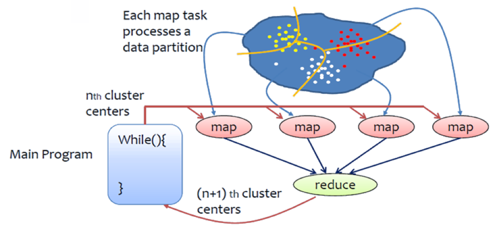

K-Means¶
This section describes how to implement the K-means algorithm using Hadoop.
{kind=link}
Understanding K-Means¶
K-Means is a very powerful and easily understood clustering algorithm. The aim of the algorithm is to divide a given set of points into “K” partitions. “K” needs to be specified by the user. In order to understand K-Means, first you need to understand the proceeding concepts and their meaning.
- Centroids
Centroids can be defined as the center of each cluster. If we are performing clustering with k=3, we will have 3 centroids. To perform K-Means clustering, the users needs to provide the initial set of centroids.
- Distance
In order to group data points as close together or as far-apart we need to define a distance between two given data points. In K-Means clustering distance is normally calculated as the Euclidean Distance between two data points.
The K-Means algorithm simply repeats the following set of steps until there is no change in the partition assignments, in that it has clarified which data point is assigned to which partition.
- Choose K points as the initial set of centroids.
- Assign each data point in the data set to the closest centroid (this is done by calculating the distance between the data point and each centroid).
- Calculate the new centroids based on the clusters that were generated in step 2. Normally this is done by calculating the mean of each cluster.
- Repeat steps 2 and 3 until data points do not change cluster assignments, meaning their centroids are set.
Pseudo Code¶
Denote:
- N is the number of data points
- M is the number of centroids
- D is the dimension of centroids
- Vi refers to the ith data point(vector)
- Cj refers to the jth centroid
The Main Method¶
generate N data points (D dimensions), write to HDFS
generate M centroids, write to HDFS
for iterations{
configure a job
launch the job
}
The Mapper¶
load centroids
#The value of the input key-value pair is a data point Vi
find the nearest centroid Cj for the data point Vi
Context.write(j, <Vi, 1>)
The Reducer¶
#The key is an ID of a centroid, the value list is a list of <Vi, 1>
newCentroid = a new D dimensional vector
count = 0
for each pair <Vi, 1> in the value list{
for k in 0 to (D-1) {
newCentroid[k] += Vi[k]
}
count += 1
}
for k in 0 to (D-1) {
newCentroid[k] /= count
}
output newCentroid to HDFS
Compile the Code¶
The code is available at https://github.com/ADMIcloud/examples. Download the code by using the git clone command or by clicking the Download Zip button. Then go to the hadoop-kmeans directory and compile the code.
git clone https://github.com/ADMIcloud/examples.git
cd examples/hadoop-kmeans
mvn clean install
Run the Code¶
The usage is:
$HADOOP_PREFIX/bin/hadoop jar target/hadoop-kmeans-1.0.jar admicloud.hadoop.kmeans.KmeansMain <num Of Data Points> <size of a vector> <num of Centroids> <number of map tasks> <number of iterations>
For example
$HADOOP_PREFIX/bin/hadoop jar target/hadoop-kmeans-1.0.jar admicloud.hadoop.kmeans.KmeansMain 100 3 10 2 3
Hadoop K-means wil firstly generate 100 data points, each a 3-D vector. The data will be saved to HDFS. It then generates 10 initial centroids and writes them to HDFS. For every iteration, K-means loads centroids and reads key-value pairs to do computation, then writes new centroids back to HDFS.
View the Results¶
$HADOOP_PREFIX/bin/hdfs dfs -ls -R kmeans
kmeans/centroids
kmeans/centroids/centroids_0
kmeans/centroids/centroids_1
kmeans/centroids/centroids_2
kmeans/centroids/centroids_3
kmeans/data
kmeans/data/data_0
kmeans/data/data_1
kmeans/out
kmeans/out/_SUCCESS
kmeans/out/part-r-00000
In this example, data_0 and data_1 are data files. The data in file centroids_0 is the initial centroids. The data in file centroids_3 is the final result after 3 iterations.